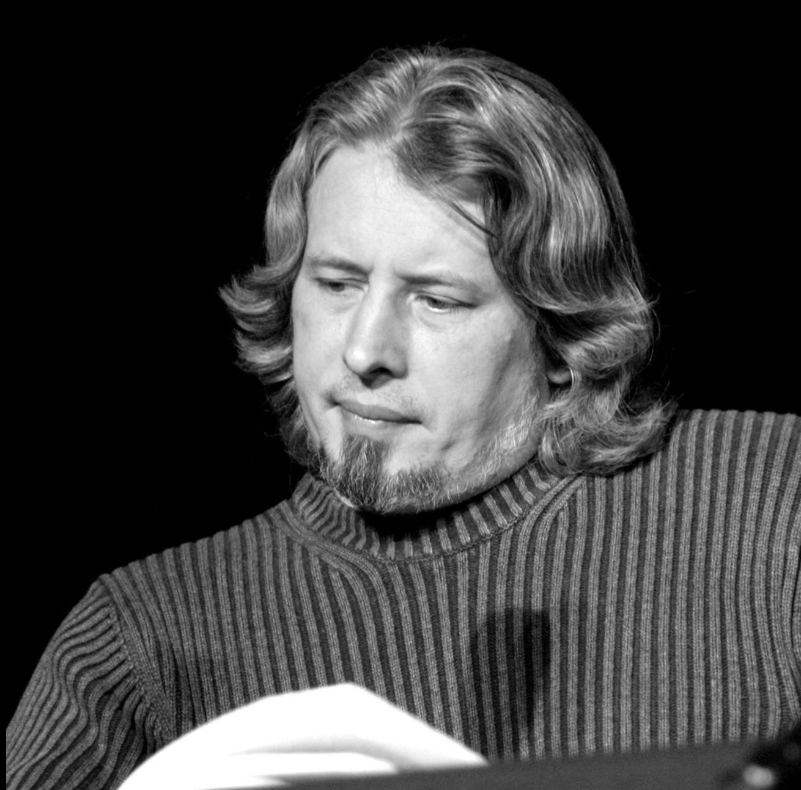

Sorokin became known for his provocative and satirical works combining elements of dystopia, alternative history and science fiction, and the grotesque. One of Sorokin's recognisable literary techniques is stylistic mimicry, he imitates various literary styles, from socialist realism, to folklore, medieval chronicle or classical Russian prose.
For Sorokin, Putin's ultimate goal is not Ukraine but the dismemberment of NATO and the destruction of Western civilization. In March 2022, Sorokin was among the signatories of an appeal by eminent writers to all Russian speakers to spread the truth inside Russia about the war against Ukraine. Following Sorokin's criticism of the Russian government, his books have been withdrawn from a number of Russian booksellers.